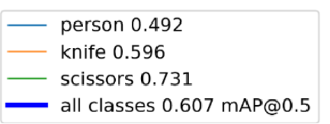
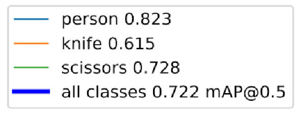
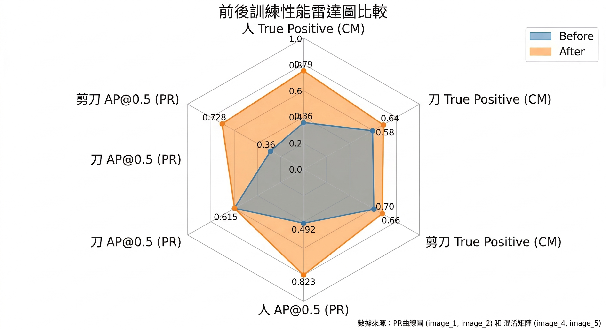

訓練數據詳細報告
AI 模型演進歷程與效能分析

資料採集：起步階段
初步建立基礎影像集，針對核心辨識目標進行標註。此階段重點在於確認模型的可行性與基礎準確度。

環境樣本分佈
涵蓋了不同光影與背景的樣本，用以測試模型在不同場景下的魯棒性。

初步模型驗證
分析首版模型的預測漏洞，作為 2.0 版優化的指引。

資料增強技術
導入旋轉、縮放與色彩抖動等 Data Augmentation 手法，人為增加資料集廣度，強化模型對形變的抗性。

邊角案例強化
針對易誤判的特殊角度或反光情形，大量補充特定樣本，顯著提升在極端環境下的辨識率。

精度與收斂優化
2.0 版進入精密度調優期，訓練損耗曲線更趨平穩，泛化能力顯著提升。

教師模型 (Teacher Model)
使用參數規模較大的模型作為教師，先行學習最高精度的特徵分佈。

知識轉移：學生模型 (Student Model)
透過知識蒸餾技術，將教師模型的精華權重導向輕量化的學生模型，維持精度的同時大幅減少參數。

輕量化部署成果
在嵌入式設備上實現更快的推論速度，且精度幾乎無損，成功突破硬體算力瓶頸。

1.0 版 vs 2.0 版：效能對比雷達圖
透過雷達圖可以清晰看出 2.0 版本在「多樣本適應性」、「低光辨識力」與「抗反光干擾」等關鍵指標上的全面進步。